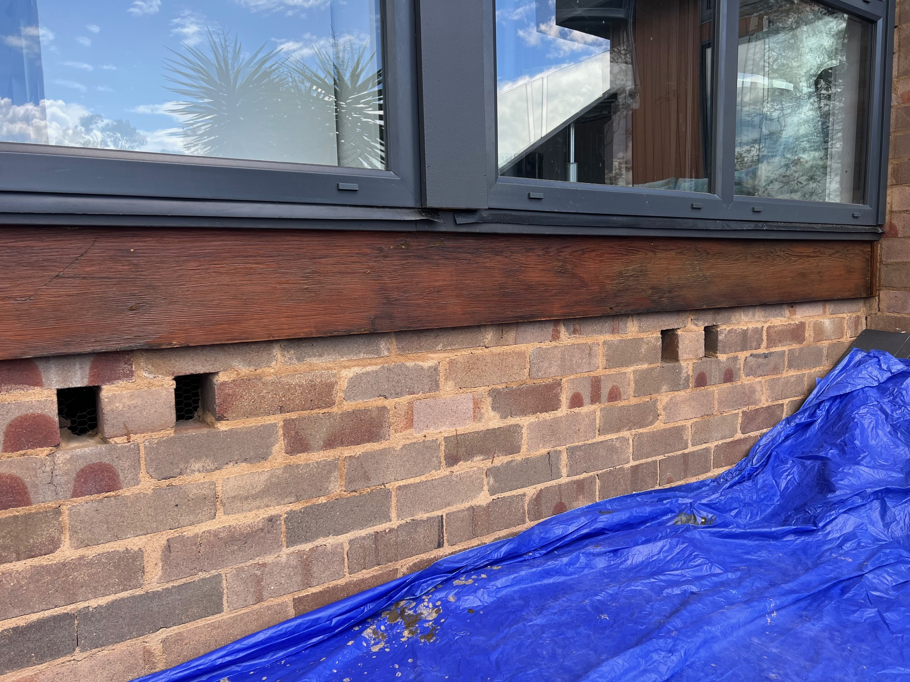
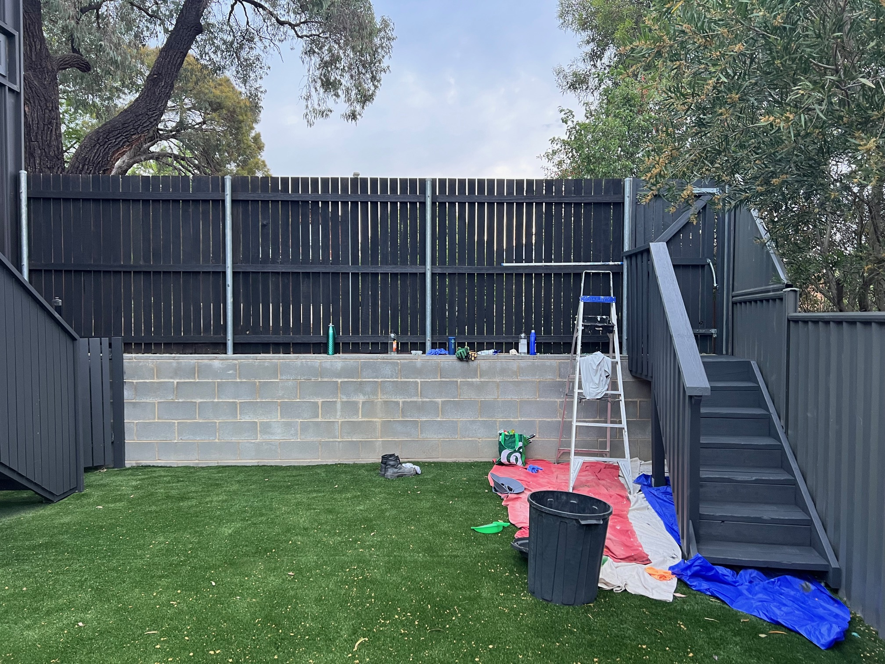
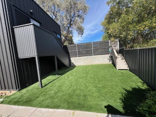
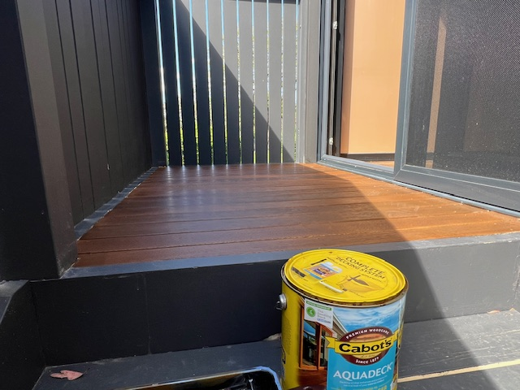
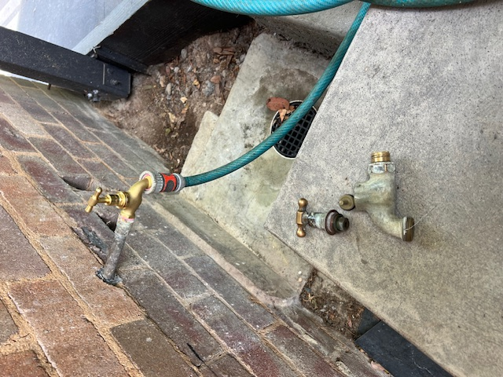
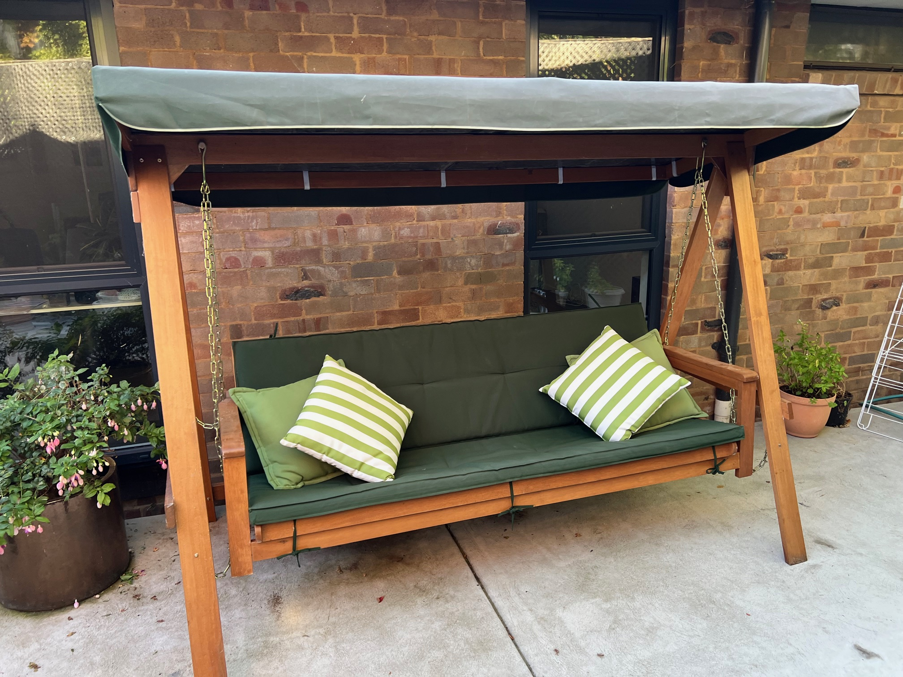
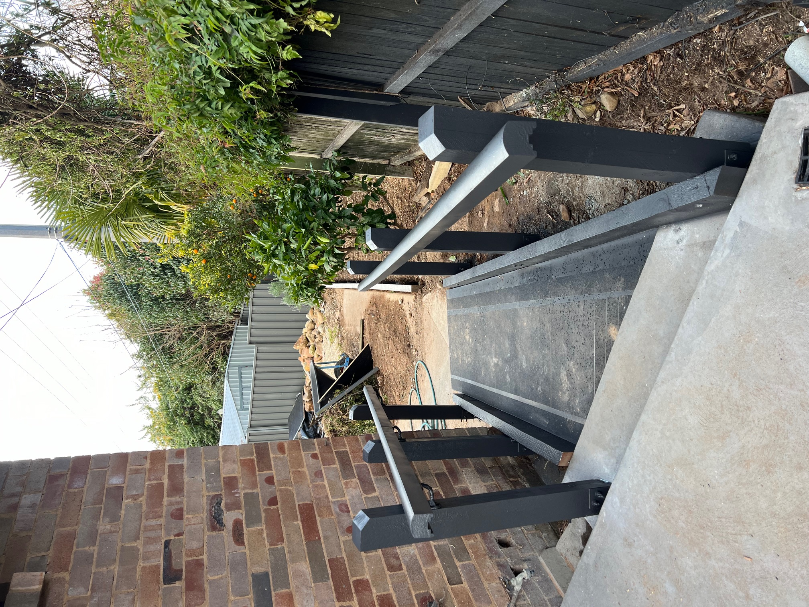
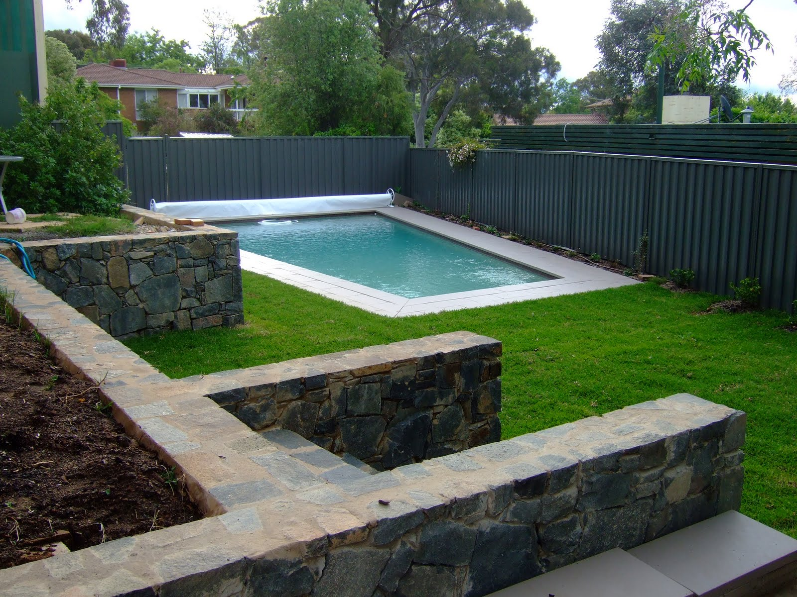
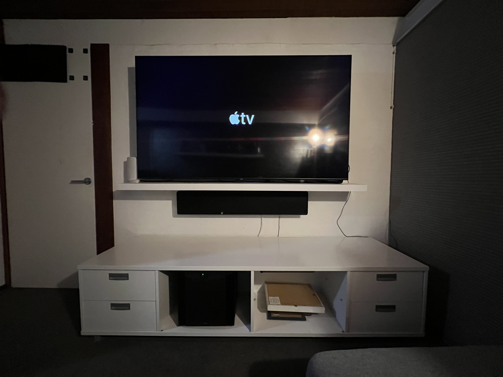

Painting

Timber Window Frame – Clean & Stain
Cleaned and re-stained a timber window frame, restoring the finish and protecting against Canberra's harsh winters.
Real work, real results — across Belconnen, North Canberra and the wider ACT region.
Jobs completed
ACT districts served
Customer rating
Insured & registered
Recent completed projects across Canberra & ACT showing quality and range of work.

Cleaned and re-stained a timber window frame, restoring the finish and protecting against Canberra's harsh winters.

Full clean, paint and stain of timber gate, external stairs and balustrades. Plus staining of timber pale fencing. Complete exterior refresh.

Cleared, levelled and installed blue metal dust base and 45m² of artificial turf, replacing a weedy area with a clean low-maintenance lawn.

Cleaned and stained the timber landing then painted balustrades and stairs for a fresh finish.

Replaced a leaking external tap. The existing spindle was too damaged to repair — full replacement was the right call.

Moved and fully assembled a cushioned timber bench swing set in a new garden location.

Designed, constructed and painted a safe accessibility ramp for an elderly resident to move freely in and out of their home.

Regular mowing, edging and whipper snipping for residential properties across Canberra. Keeps gardens looking sharp year-round.

TV mounting, cable management, WiFi setup and smart home device configuration, Website design, domain registration, ongoing support and hosting. Easy and stress-free.
Neil provides a free, no-obligation quote for all work across Canberra & ACT.
Serving all Canberra & ACT: Hawker · Belconnen · Gungahlin · Lyneham · Braddon · Woden · Weston Creek · Kambah · Tuggeranong · Molonglo · Queanbeyan · and more